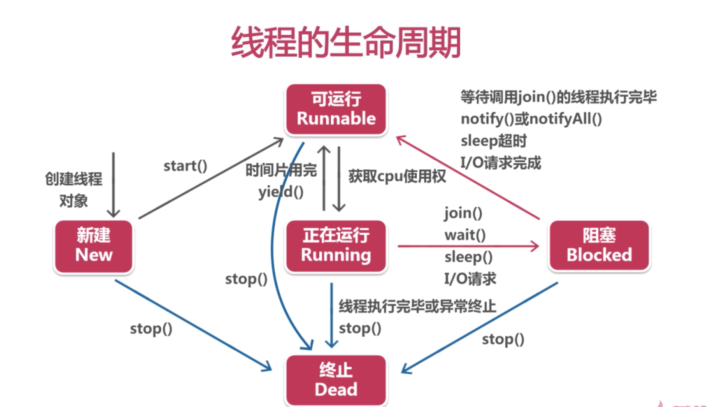
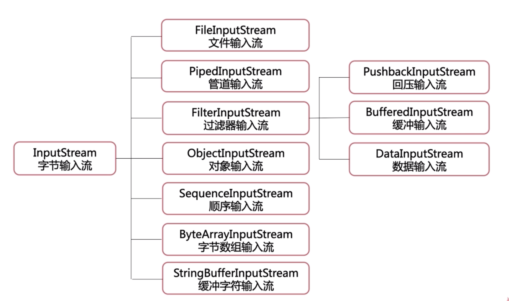
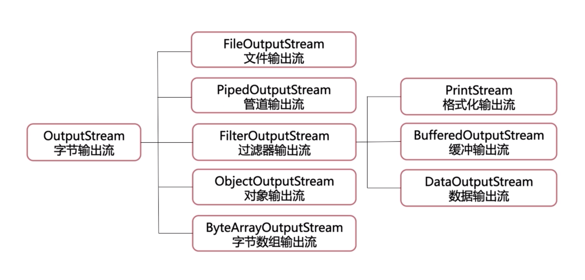
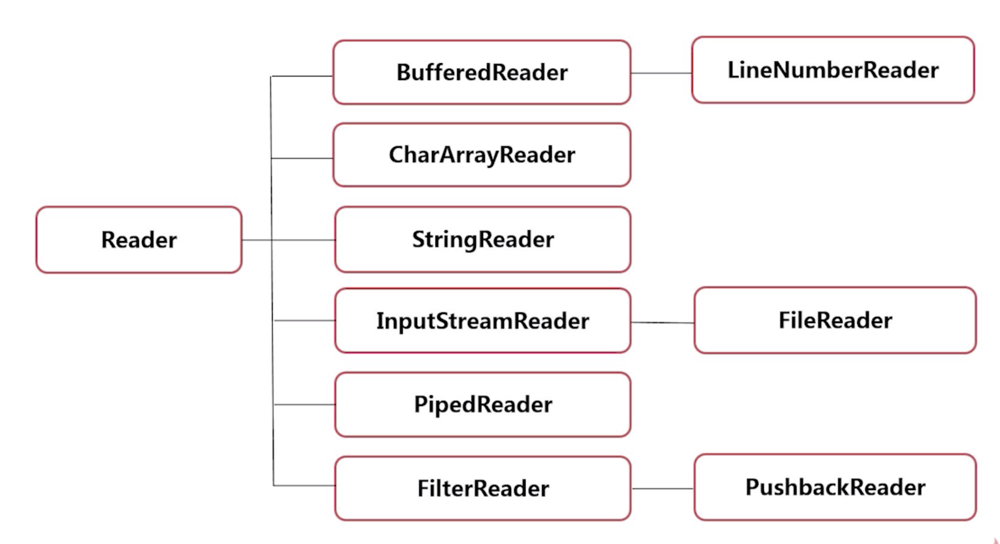
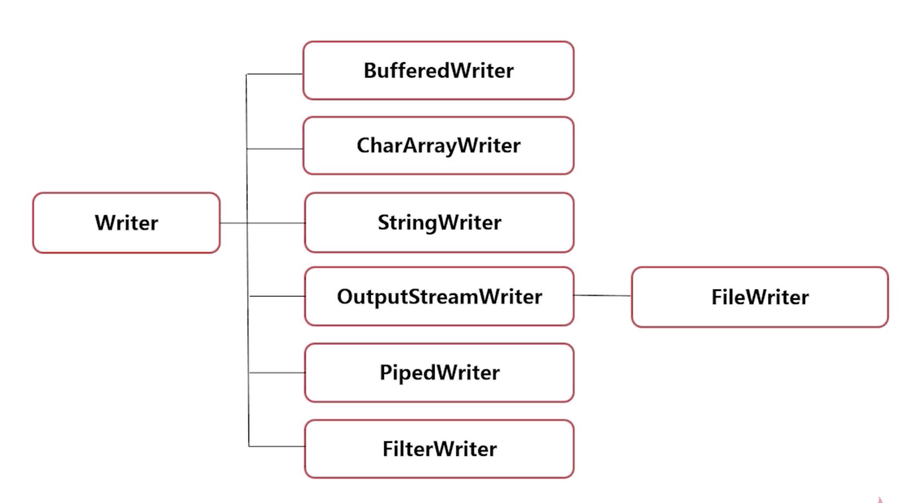

来源于慕课网Java零基础入门
好多基础的东西都忘记了，补起来！
线程

创建线程的几类方法
- 继承Thread类
1 | public static void func1() { |
- 实现Runnable接口
1 | public static void func2() { |
- 实现Callable接口
1 | public static void func3() { |
Sleep方法使用
注意，因为线程调度的一些因素，从停止到开始的时间间隔可能会大于设定的时长
1 | public static void func4(){ |
其他
调用join()/join(millionsecond)的线程优先执行
- 可以在主线程中调用子线程的这个方法来使其等到子线程运行结束
调用方法
getPriority,setPriority对其优先级进行操作，优先级从小到大1-10，默认为5线程间通信
- wait() 阻塞
- notify() 唤醒
- notifyAll()
流
字节流 对二进制进行操作
- InputStream 输入

- OutputStream 输出

- FileInputStream
- public int read() 读一个字节
- public inr read(byte[] b) 读入一个字节数组中 -1表示已经读到了末尾
- public int read(byte[] b, int off, int len)
- public void close() 关闭
1 | int n; |
FileOutputStream
- FileOutputStream(File, ”是否追加“)
- public void write(int b) 写一个字节
- public void write(byte[] b) 写一个字节数组
- public void write(byte[] b, int off, int length)
- public void close()
对文件的拷贝
1 | byte[] b = new byte[1024]; |
BufferedInputStream
BufferedOutputStream
1 |
|
字符流
- Reader

- Writer

InputStreamReader(FileInputStream, “utf-8”)
OutputStreamWriter(FileOutputStrea, “GBK”)
- getEncodings
对象序列化
- Serializable 接口
- ObjectInputStream(Inputstream)
- ObjectOutputStream()